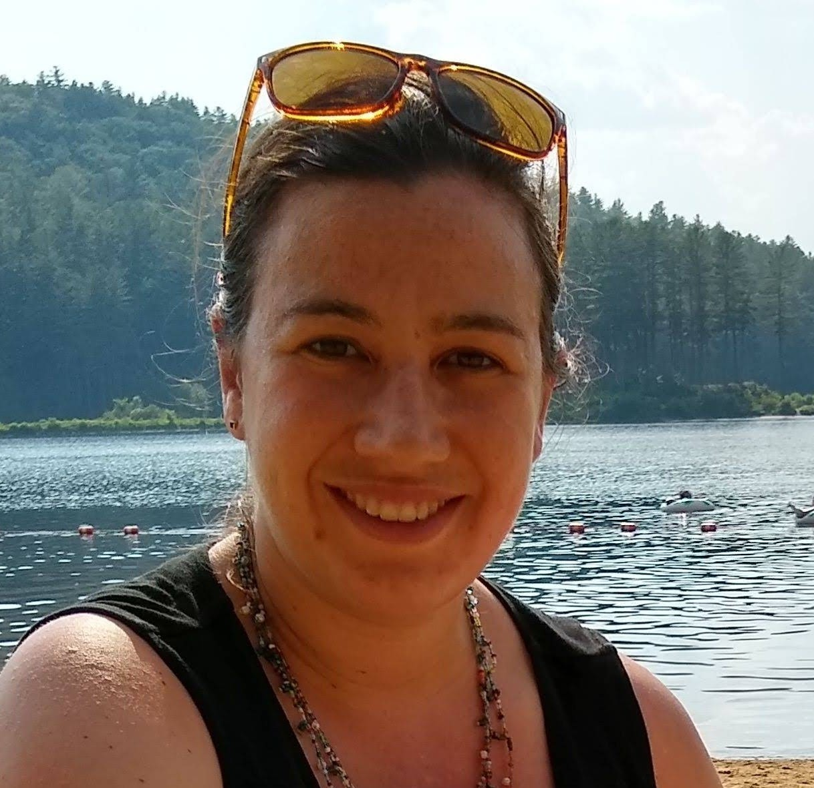

|  |
Ann NordmeyerSenior Lecturer |
I am Senior Lecturer in the Department of Psychological Science at the University of Vermont. I teach courses on Introductory Psychology, Developmental Psychology, and Statistics. My research focuses on how children and adults learn and process logical language.
I completed my PhD at Stanford University in 2016, where I worked with Michael Frank in the Language and Cognition Lab studying how children learn and understand logical words in communicative contexts. Before that, I was an undergraduate at Smith College where I worked with Jill de Villiers studying the relationship between linguistic and conceptual development. From 2016 - 2023 I was an Assistant/Associate Professor in the campus Psychology Department at Southern New Hampshire University.